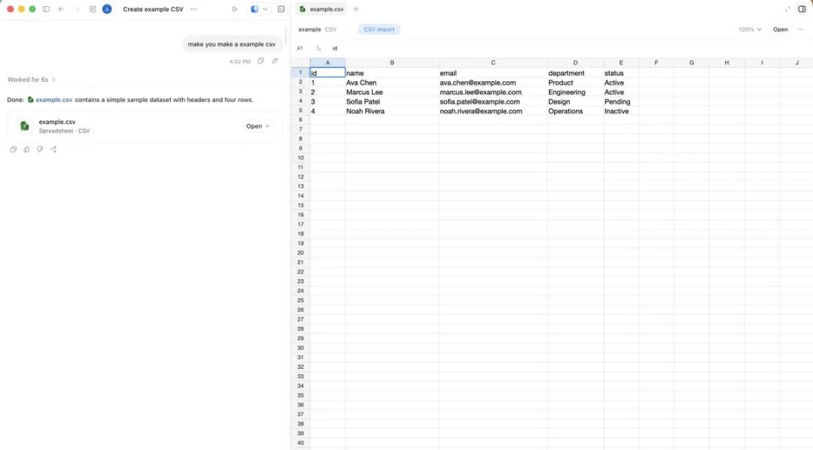
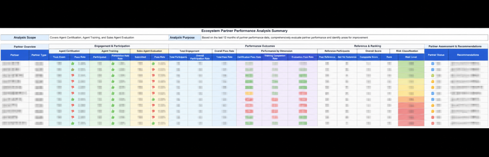
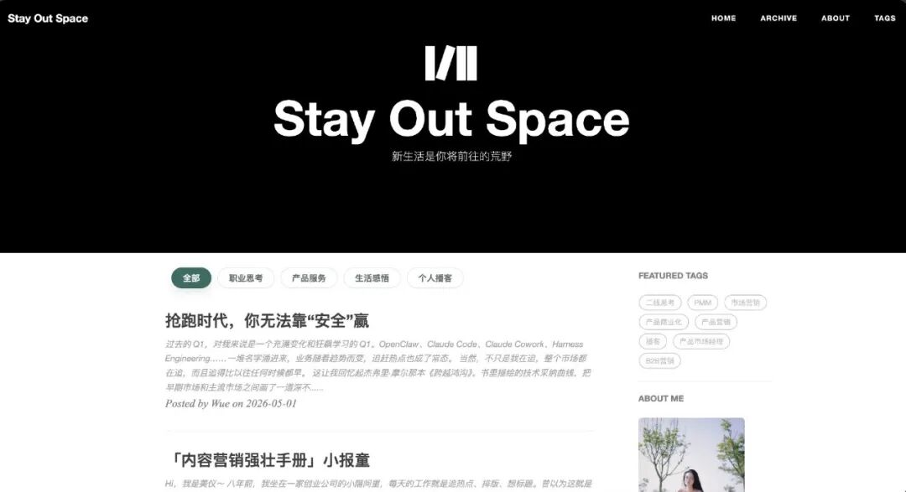

最近几个月，我养成了一个新习惯。
每天早上到工位，第一件事是打开飞书。现在，又新增了一个标准动作：打开 Codex。这个动作一开始也没有什么特别的，它不像换一台新电脑，也不像安装一个效率软件后信誓旦旦地说“我要重塑工作流”。它只是很自然地嵌入了我的一天：打开电脑，确认消息，扫一眼待办，然后打开 Codex。
如果不打开它，我当天的工作节奏反而会有点卡住。
这种感觉很微妙。我逐渐发现，很多原本会消耗我注意力的细碎环节，现在有了一个可以承接的对象。它不像一个完整的同事，也不像一个纯粹的工具，更像是我多出来的一双手，再加半个参谋。
把细沙扬出去
如果把我日常的工作任务做一个粗略分类，大概可以分成三类：执行类任务、判断类任务、协调类任务。
这三类任务，对人的消耗是不一样的。执行类任务消耗的是时间和耐心；判断类任务消耗的是认知资源；协调类任务消耗的是上下文管理能力和情绪资源。而我现在使用 Agent 的原则，也基本围绕这三类展开。
第一类，是代替执行。
凡是重复的、规则明确的、不需要做关键判断的事，我会尽量交给 Codex。比如整理会议纪要、格式化数据、生成标准化摘要、润色一段内容、把一堆零散信息整理成结构化文档。这些事情过去不是不能做，而是很磨人。它们像工作里的细沙，不会单独构成什么大问题，但会一点点把人的注意力磨掉。大量的时间放在这些事情上，当然也会让人感觉没啥成就感。
Codex 这一类 Agent 在这类任务上最大的价值，不只是速度快、质量稳定，更重要的是它不会烦躁。它不会随意在一个策划方案里丢失“人员分工”，也不会因为我反复调整数据分析口径而失去耐心，更不会因为一个表格改来改去，让我的耐心被反复消耗。

我现在时常会让 Codex 先把数据分析模板、使用说明、计算关系和联动公式都搭好，再交给不擅长数据分析的同事参考使用。它节省的不只是我的教学时间，也减少了后续反复校对的成本。
第二类，是辅助判断。
我会给 Codex 一个场景、一段背景信息，甚至是一堆还没有完全想清楚的输入，然后让它帮我展开几个选项。
比如最近我们团队要设计一场活动的指标体系，目标是从 A 产品往 B 产品引流。之前没有现成的参考基准，我需要先找到一个大致区间。
如果自己去搜索，可能要读很多文章和报告。但现在我可以先让 Codex 找出几份海外同类产品的参考资料，并整理出关键结论。随后，它再帮我拉出一份指标清单：过程、结果、转化等，它还会建议，有些维度是可以参考现有指标的，但有些维度应该从自己的业务实际出发自定义。接下来，我要做的就是在这张清单上快速做减法。
这件事改变了我的判断方式。
过去我们可能会陷入一种状态：脑子里知道要做判断，但材料还不够完整；知道需要结构，但结构还没有浮现。于是时间就耗在“启动”上。Agent 的作用，是帮我把混沌先摊开。它不替我决策，但它帮我穷尽可能；它不告诉我唯一正确答案，但它让我更快看见问题的边界。
第三类，是支撑协调。
跨部门沟通、信息拉齐、进度追踪、风险预判，这些事很难完全被 AI 替代。因为协调的本质是处理人、目标、资源、时间之间的张力，不仅仅是写文档或开会那么简单。
但 Codex 可以让我在沟通之前准备得更充分。
比如生成一份对齐文档，梳理各方需要确认的问题，提前列出可能的风险点和预案建议。AI 无法替我沟通，也无法替我判断某个同事话里的真实顾虑。但它可以帮我减少遗漏，让我在会议开始前，脑子里已经有一张比较完整的地图。
所以我越来越觉得，不是所有工作都能被 AI 取代，至少不是以一种简单粗暴的方式被取代。更准确的说法可能是：很多工作会被重新拆解。其中一部分交给 Agent，一部分仍然留给人，而人的价值会越来越集中在判断、选择和承担后果上。
让流程顺下来
拿举办一场训练营活动来说，这件事串起了策划、内容输出、数据分析、复盘总结几个环节。以前我会把它理解为一个完整项目，现在我更倾向于把它看成一个可以被 Agent 分段支撑的工作流。
策划阶段，我们目标不是简单地“办一场活动”，而是拿到可量化的业务结果。
我把目标告诉 Codex：希望覆盖多少家目标客户，产出多少条有效线索，预期转化率大概是多少。它很快给出了一套指标体系，还附带了几个海外同类活动的研究链接作为参考。让我有点意外的是，那些链接并不是为了显得“信息量很大”而随手凑出来的，点开看了，也确实对指标设计有帮助。
活动结束后，进入数据分析阶段。
数据散在好几个地方：报名表、签到表、问卷反馈、BI 仪表盘。以前可能要花半天时间手动拉 Excel，匹配，对比，核算，检查重复项等等。
这一次，我提前告诉 Codex：我需要一个多表联动的分析模板，能够自动关联各个环节、计算转化率。几分钟后，它就给了一个可用的 Excel 模板，带公式，也带透视表。这个表格可以直接给到团队里不太擅长数据分析的同事参考使用。

这不是一个多么惊天动地的成果，但它很实用，减少了很多沟通成本，也能把人从“清洗表格”的状态里解放出来，让人可以更快进入“看数据意味着什么”的状态（当然，前提也是看数据的人已经具备了一些业务分析的能力）。
复盘阶段，它帮我生成了一份报告结构：数据回顾、亮点、问题、改进计划。这个框架不复杂，但恰好解决了另一个常见消耗：每次写复盘，都要先重新搭一遍骨架。现在只需要把素材填进去，再根据真实情况调整判断。
最后是总结。活动结束后，往往需要输出一封对内简报，有时候还需要一篇对外宣传文。过去这类事情至少要花半天：先整理素材，再切换语气，再压缩表达。现在我把原始素材贴进去，让 Codex 分别生成两个版本，我再动手修改。也就几分钟就可以搞定。
整场活动跑下来，我最大的感受除了省时间，更多的是我少了很多被琐事或检查产出物而打断节奏的时刻。
这其实很重要。
很多时候，工作效率低，并不是因为人真的慢，而是因为不断被迫在不同状态之间切换，很多人其实并不擅长这种高频的状态切换——刚想进入策略判断，就被催着要数据；刚整理完数据，又要切换到文案表达；刚写完文案，又要开一个进度会。人的注意力像被反复切开，最后每一块都不完整。
Codex 可以帮我们做的，是让这些切换变得没那么粗暴。流程是顺的，脑子是清的，人的主体感也就保留得更多。
被垫低的门槛
还有一件小事，让我有点意外。
我有一个博客网站 https://www.wuyi.space，之前是队友帮我用静态网站生成器搭的。主题、布局、样式这些东西，我以前很少改动。对上传文章、做排版这件事，我也一直觉得 Markdown 格式有点麻烦，所以维护得很低频。
当然，也不是完全不能学。只是一想到要翻文档、改格式，就会觉得这件事不值得开始。
前几周，队友突发奇想，让 Codex 帮我改博客。差不多十来分钟，就从我的公众号搬运了一篇文章到网站上，过程非常顺畅。
后来，我说：想把黑白基础上的蓝色强调，换成一个更协调的颜色。Codex 分析了网站当前的颜色，直接给出一个建议色号。我确认没问题后，它就直接把全网站的强调色修改好了。全程不到四分钟。
后来，又顺手让它在首页加一个“全部”列表。它继续执行，几分钟就搞定了，栏目button也没之前那么简陋了。

那一刻我惊喜：以后不用学什么前端，也能完成以前需要会写代码才能完成的事了。
学写代码仍然是技能叙事：我掌握了一门新能力。现在，很多事情的边界被重新画了一下：有些事情过去被专业门槛挡在外面，现在门槛没有消失，但它被工具垫低了。
我当然不会因此变成工程师，也依然不懂代码。但我获得了一种新的行动可能性。过去看到“不会”就停下，现在我会先问一句：这件事能不能被拆成我可以指挥、Agent 可以执行的部分？
有用的焦虑
很多人聊 AI，都会感到焦虑。但我越来越觉得，如果这种焦虑只停留在学习层面，那可能永远都找不到缓解的办法。
学习焦虑是什么？是怕自己不懂新技术，没用过新工具，跟不上新趋势。今天大家都在聊一个模型，明天又出现一个新产品。界面变了，入口变了，功能变了，教程也很快过期。你当然可以不断学习，但如果只是追着工具跑，人会很累。
另一种焦虑，可能更值得关注，叫“应用焦虑”。
它不是焦虑自己有没有用过某个工具，而是焦虑自己有没有真正把 AI 融入工作流；不是焦虑自己知不知道一个新名词，而是焦虑自己是不是还在用旧方法做新事情。
前者容易把人推向囤积：收藏教程、报名课程、转发文章。后者会把人推向实践：今天哪个环节可以交给 Agent？哪个判断可以让它先帮我展开？哪个流程可以被重新设计？
当这种应用尝试，真的开始融入甚至是改变工作流，新的获得感会慢慢出现，并且逐渐替代原来的焦虑感。因为你会发现，AI 不是一个远处的宏大趋势，它已经可以具体地出现在一天的工作里：一份表格、一场活动、一个网页。
它不是未来才会发生的事。它已经在改变今天。
重新理解“资深”
AI 擅长做信息整合与内容输出，因此我们都认为大量知识型工作的执行部分会被替代，这个趋势已经开始了。
但我不认为短期内，带有丰富上下文和业务认知的资深员工会被完全替代。原因也很简单：真实工作从来不是只处理信息，而是处理信息背后的语境。
同样一份活动数据，什么叫好，什么叫不好，要不要继续投入，问题出在渠道、主题、销售跟进，还是客户本身意向不足，这些都不能只靠表格判断。
同样一篇对外文案，哪些话能说，哪些话不能说，哪些表达虽然漂亮但不符合产品规划、品牌语气，哪些内容看似完整但其实没有业务价值，也需要经验来判断。
过去可能是一个资深员工带五个初阶员工。现在可能会逐渐变成：一个资深员工带一个初阶员工，再加上 N 个 Agent 工具。
那个“初阶”依然重要，因为有些东西需要人传人。一个人如何判断优先级，如何感受业务现场，如何在不确定中承担责任，这些很难只靠工具完成。
而“资深”之所以还是资深，也不是因为会用工具。会用工具很快会变成基础能力。真正重要的是：知道什么时候该用工具，什么时候该自己拍板；知道什么信息是噪音，什么上下文必须保留；也知道一个看似漂亮的输出，到底有没有解决真实问题。
所以，我不再只焦虑自己“会不会用”某个工具。而是关注自己有没有把它嵌进工作流，有没有减少重复的执行动作，释放精力去思考、判断与协调，最终有没有真的用出效果。
工具是容易替换的，也是相对便宜的。
工作流的升级不是。